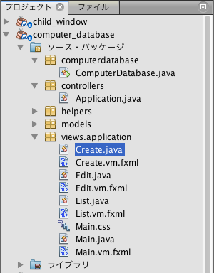
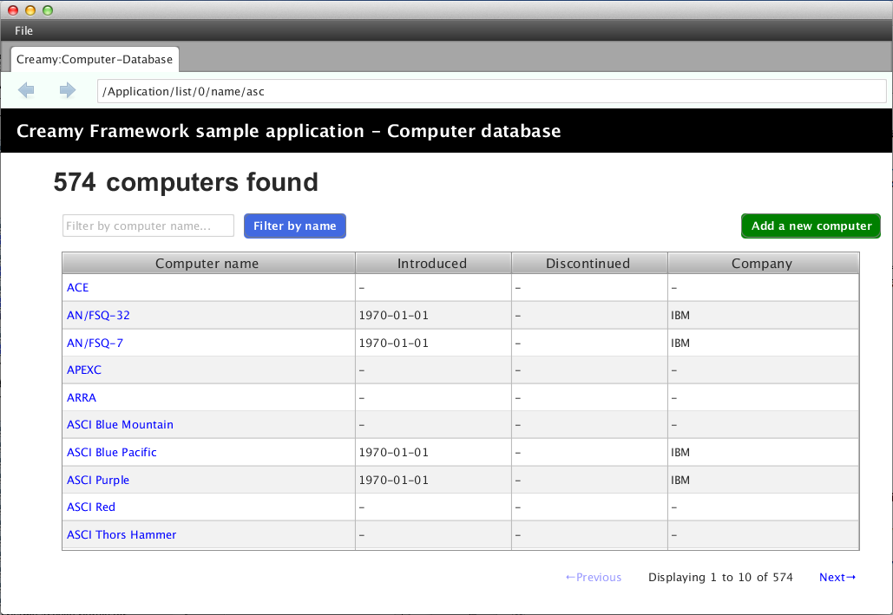

viewsパッケージは、MVCアーキテクチャのViewにあたるもので、画面表示に関わる次のファイルを配置します。
これらのファイルは、viewsパッケージ配下に、Creamyコントローラクラス名をすべて小文字に変換した名前でパッケージを作成し、さらにその配下に配置します。
次の例は、新しいコンピュータデータを登録するCreamyアプリケーションのパッケージ構成です。
パッケージ構成例
画面例
Activityクラスは、AvailableActivityクラスを継承して作成します。
AvailableActivityクラス
1 2 3 4 5 | public class AvailableActivity extends Activity implements Available {
@Override
public void initialize() {}
}
|
initializeメソッドに画面の描画コードを記述します。
1 2 3 | public class List extends AvailableActivity {
}
|
Activityクラスは、画面表示に必要なFormコントロールの描画メソッドを提供します。
各Formコントロールについては、Formコントロール を参照して下さい。
描画メソッドについては、Activityクラスが提供するメソッド を参照して下さい。
次の例は、コンピュータデータ登録画面をAvailableActivityが提供するメソッドを使って作成しています。 画面描画内容は、Activityクラスのinitialize()メソッドで実装します。
記述例 - Create.java
1 2 3 4 5 6 7 8 9 10 11 12 13 14 15 16 17 18 19 20 21 22 23 | @Override
public void initialize() {
createForm.getChildren().add(
gridForm("/Application/save").method(Request.POST).styleClass("grid-form")
.row(label("Computer Name:"),
text("name"),
label("Required").styleClass(this.validationResult.hasError() ? "err-text" : "guide-text"))
.row(label("Introduced Date :"),
text("introduced").format(format),
label("Date (" + DATE_FORMAT + ")").styleClass("guide-text"))
.row(label("Discontinued Date :"),
text("discontinued").format(format),
label("Date (" + DATE_FORMAT + ")").styleClass("guide-text") )
.row(label("Company :"),
choice("company.id").items(Company.options()).prefWidth(275))
.row(hbox(submit("Create this computer").styleClass("btn-primary"),
label(" or "),
linkbutton("/Application/index").text("Cancel").styleClass("btn"))
.padding(new Insets(15,0,15,140)).spacing(5)
.styleClass("actions")
,3)
);
}
|
4行目でCFGridFormを生成しています。Applicationコントローラクラスのsaveメソッドを実行するパスを指定し、データ送信メソッドはPOSTを指定しています。
16行目でCFSubmitButtonを生成しています。
これは、HTMLのform要素にsubmitボタンを配置したイメージに相当します。
上記のCreate.javaに実装した内容を表示するには、Create.vm.fxmlファイルが必要です。
FXMLのより詳細な記述方法は、こちら を参照してください。
<AnchorPane>要素のfx:controller属性にコントローラクラス名を指定して、FXMLファイルとクラスファイルを関連づけます。
記述例 - Create.vm.fxml
1 2 3 4 5 | <AnchorPane id="AnchorPane" maxHeight="-Infinity" maxWidth="-Infinity"
minHeight="-Infinity" minWidth="-Infinity"
prefHeight="600.0" prefWidth="1000.0"
xmlns:fx="http://javafx.com/fxml"
fx:controller="views.application.Create">
|
views.application.Createクラスのinitialize()メソッドで実装した内容は、次の<StackPane>の<children>要素として指定しています。
記述例 - Create.vm.fxml
1 2 3 4 5 6 7 8 | <StackPane id="stackPane1" fx:id="createForm" alignment="TOP_LEFT"
prefHeight="484.0" prefWidth="760.0"
AnchorPane.bottomAnchor="0.0" AnchorPane.leftAnchor="0.0"
AnchorPane.rightAnchor="0.0" AnchorPane.topAnchor="0.0">
<children>
:
</children>
</StackPane>
|
views.application.Createクラスでは、@FXMLアノテーションを付けおくことで<StackPane>と関連づけられます。
記述例 - Create.java
1 2 3 4 | public class Create extends AvailableActivity {
@FXML private StackPane createForm;
}
|
以下は、コンピュータデータ登録画面の実行例です。
実行例

Creamyで使用するFXMLファイルには、Velocity構文を記述することが出来ます。FXMLファイルの拡張子が .vm.fxml となっているのは、Velocityのテンプレートとしての役割も持たせているためです。
次は、Velocity構文の #renderマクロ を使った例です。 #renderマクロ は、画面描画を部分的に置き換えるときに使います。
記述例 - CommonPart.vm.fxml
1 2 3 4 5 | <ChildPane fx:id="inputArea" prefHeight="196.0" prefWidth="463.0">
<children>
<!--% #render("NewComputer") -->
</children>
</ChildPane>
|
1行目の<ChildPane>要素はCreamy独自のもので、この部分がActivityに置き換わります。
3行目にVelocity構文を記述しています。‘ <!–% ‘ と ‘ –> ‘ で囲むことで、FXMLとしてはコメントとして認識されます。#renderマクロ は１つの引数を取り、Activityクラス名を指定します。この例では “NewComputer” を指定していますので、NewComputer.java、NewComputer.vm.fxml の実装が必要です。
#renderマクロ は、次のように定義しています。
記述例 - render.vm
1 2 3 | #macro(render $child)
<ChildPane child="$child" />
#end
|
上の例の render.vm ファイルは、helpersパッケージに配置します。